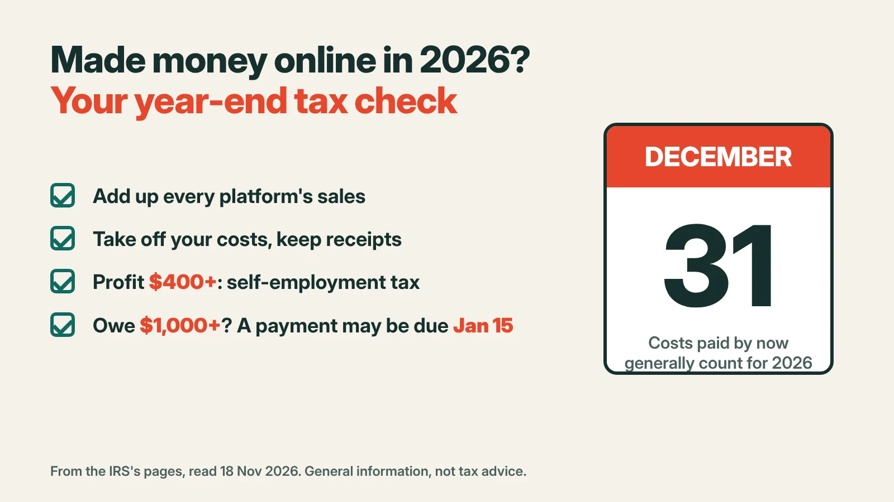

Grow Your Shop desk · Reselling
Made money online in 2026? Your year-end tax check before January 1
If your Etsy shop, eBay flips, TikTok commissions or print-on-demand sales turned a profit this year, a short check before December 31 tells you what you owe, whether a January payment is due, and which costs you can still count. Here's the check, in plain words, from the IRS's own pages.

The short version: If your online side business made money this year, the profit is yours to grow, and a short check before December 31 keeps the IRS from taking a surprise bite out of it next spring. Add up what you sold, take off what it cost you, and look at the number. Profit of $400 or more means self-employment tax. If you'll owe $1,000 or more, a payment may be due by January 15, 2027. Costs you pay before January 1 generally count for 2026.
Who this is for: anyone in the US who sold on Etsy, eBay, TikTok Shop, Amazon or their own site, flipped thrift finds, ran a print-on-demand shop or earned affiliate commission in 2026. This is general information, not tax advice.
Check 1: add up everything you sold
Download your 2026 sales reports from each platform and add them up. Count every platform, including the small ones.
Don't wait for a Form 1099-K to tell you. Payment apps and online marketplaces only have to send one when your payments pass $20,000 and 200 transactions, though some send one below that, and some states set a lower line. The IRS is plain about it: you must report your income whether or not you get the form.
Check 2: take off what it cost you
Your tax is on profit, not sales. Platform fees, shipping labels, the cost of the items you resold, print costs, packaging, samples and software you used for the business all come off.
Pull the receipts together now, while you can still find them. A folder with one PDF per month is enough.
The turn: $400 of profit changes what you owe
This is the part new sellers miss. Once your net earnings from self-employment reach $400 for the year, you owe self-employment tax and file Schedule SE. The rate is 15.3%: 12.4% for Social Security and 2.9% for Medicare. That's on top of income tax.
So a shop that made $3,000 in profit isn't $3,000 ahead. Set some of it aside now, before you spend it on stock for the new year.
Check 3: is a January payment due?
The IRS expects tax as you earn, not all at once in April. You generally must make estimated payments if you expect to owe at least $1,000 after your withholding and credits, and your withholding covers less than the smaller of:
- 90% of this year's tax, or
- 100% of last year's tax (110% if last year's AGI was over $150,000).
The last payment for 2026 is due January 15, 2027. If you have a job as well, raising your withholding from your paycheck before year-end can do the same job.
Check 4: costs you pay by December 31
If you use the cash method, as most small sellers do, you generally deduct an expense in the year you actually pay it. So supplies, a label printer or a course you were going to buy in January anyway count for 2026 if you pay for them before January 1.
One catch for resellers: stock you buy to resell follows the IRS's inventory rules, not the simple pay-it-and-count-it rule, so loading up on stock in December may not lower your 2026 tax. Publication 538 explains the options for small sellers, and a tax pro can tell you which one fits you.
Don't buy things you don't need just for the deduction. A dollar spent to save a part of a dollar in tax is still a dollar gone. And prepaying next year's costs, such as a 12-month software plan, has its own rules.
Do this now
- Download every platform's 2026 sales report this week and total them in one sheet.
- List your costs and gather the receipts. Total them under the sales.
- Look at the profit line. At $400 or more, plan for self-employment tax. Set aside part of each sale from now on.
- Check whether you'll owe $1,000 or more. If so, look at the January 15, 2027 payment or more withholding.
- Talk to a tax professional if your shop grew fast this year. Then plan next year's cash with our free reselling cash forecast.
What's still unknown: your own number. Your total tax depends on your other income, your state and your deductions, which is why a professional is worth it once the shop is real money.
What we checked: the IRS's pages on Form 1099-K, self-employment tax and estimated tax, and Publication 538 on the cash method, all read on November 20, 2026. The $3,000 example is our own. This is general information, not tax advice.
Sources, checked 20 Nov 2026
- IRS, 'Understanding your Form 1099-K', updated 17 Nov 2026, read 20 Nov 2026. irs.gov
- IRS, 'Form 1099-K FAQs: General information', updated 3 Apr 2026, read 20 Nov 2026. irs.gov
- IRS, 'Self-employment tax (Social Security and Medicare taxes)', updated 30 Oct 2026, read 20 Nov 2026. irs.gov
- IRS, 'Estimated tax' FAQs, updated 16 Oct 2026, read 20 Nov 2026. irs.gov
- IRS, Publication 538, 'Accounting Periods and Methods' (January 2022 revision), read 20 Nov 2026. irs.gov
Applies to: people in the US who earned money from an online shop, reselling, print-on-demand or affiliate commissions in 2026.
How this was made: researched from the sources below, checked claim by claim and edited by Drew Halden. Editorial responsibility: ePORTS LLC. Nothing here is legal, tax or financial advice. Spotted an error? Tell us and we'll correct it on this page.